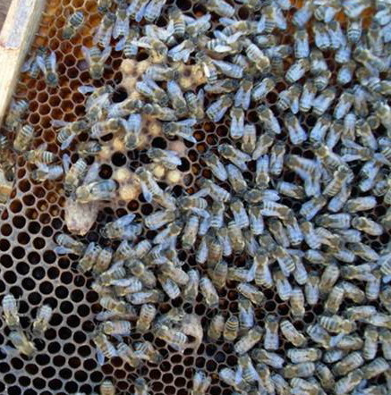

Цікавий випадок стався у мене на пасіці навесні минулого року. Переглядаючи одну з бджолиних сімей після зимівлі,
я не виявив в ній матки. Замість міченої матки на одній з рамок я побачив розкритий з торця маточник з жменькою
трутневого розплоду навколо нього. Річ у тому, що в зиму сім'я йшла з молодою маткою породи бакфаст і великою кількістю
розплоду, але сьогодні, вже у кінці березня, у вулику не було ні матки, ні нормального розплоду.
Спочатку я подумав, що матка загинула за зиму, а сім'я перетворилася на трутовку. Проте горбатого розплоду
виявилося підозріло мало, та і зосереджений він був виключно навколо маточника, а не як зазвичай по усій рамці.
Розкритий з торця маточник красномовно свідчив про вихід з нього матки. Спостерігаючи таку картину, я дійшов
висновку, що в сім'ї сталася тиха зміна матки, а ранні трутні потрібні були для її запліднення.
"Ось так і купуй їм маток. Хорошу молоду матку знищили а вивели свою, природно, поки неплідну. Як же вона в
мороз ,буде облітатись?", - роздумував я, роздивляючись бджіл у пошуках вже нової матки. Через декілька хвилин
мені вдалося-таки знайти молоду непллодну матку і залишилося лише закрити вулик, в надії, що рано чи пізно вона все
ж облітається. Якщо за два тижні в сім'ї не з'явиться нормальний розплід, то доведеться об'єднати її з іншою сім'єю.
На подив морози змінилися різким потеплінням і вже першого квітня видався не по сезону теплу днинку. На термометрі
того дня було майже 20(!) градусів вище за нуль.
"Потрібно ж, як все-таки бджоли відчувають погоду. Ось і облітається сьогодні маточка", - думав я, спішно очищаючи
від зимового підмору вулика і радіючи теплому весняному сонечку.
Після двох тижнів я знову заглянув у вулик. На жаль, нова матка з якихось причин не обліталася і сім'я почала
трутневеть, на що вказував свіжий горбатий розплід. Мені нічого не залишалося, як з'єднати семью-трутовку з
найближчою бджолиною сім'єю, заздалегідь видаливши з неї матку, що так і не обліталася. Так я ранньої весни
підсиліл одну із слабких сімей на своїй пасіці.
Про те, як і чому відбувається тиха зміна матки я вже розповідав в одній зі своїх статей. Запобігти цьому процесу
неможливо, відбувається він без відома бджоляру. На підставі вищеописаного досвіду я дійшов висновку, що бджоли
можуть поміняти матку не дивлячись на її вік, стан здоров'я і плодючість. Іноді бджоли міняють матку лише тому, що
вона їм просто не подобається. Як любить говорити мій учитель-бджоляр: "Не матка королева серед бджіл, а бджоли -
хозяї матки. Саме бджоли вирішують, коли їм міняти матку". Просто не завжди така зміна відбувається вдало.